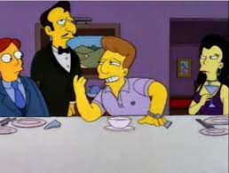

"Soup a L'Oignon"

"Recetuli"
Oye que rayos es esto se la sup al ognion momento ven acá como dijiste dilo fuerte para que todos te oigan anda
dilo
hazlo sup al ognion para el viejo Barrigon !!
"Ingredientes"
- Pan blanco 50 g
- Vino blanco 30 cc
- Harina 10 grs.
- Harina 10 grs.
- Sal y pimienta A gusto
- Laurel 1 Hoja
- Manteca clarificada 30 g
- Fondo de carne 50 cc
- Fondo de pollo 150 cc
- Queso Gruyere 50 g
- Cebolla 150 g
"Pasos"
- Corte las cebollas en plumas.
- En una cacerola sobre fuego fuerte con manteca clarificada cocine la cebolla hasta que se vea dorada y
salpimiente.
- Espolvoree con harina y cocine unos segundos revolviendo constantemente.
- Agregue el vino y deje reducir.
- Añada el fondo de pollo, el fondo de carne, laurel, pimienta y deje reducir a la mitad de su volumen.
- Tueste el pan en el horno caliente.
- Presentación
Sirva la sopa en un tazón, encima coloque las tostadas, espolvoree con el queso gruyere rallado y gratine en
el horno caliente.